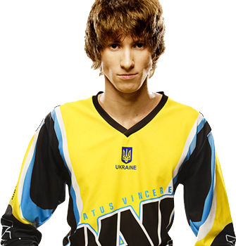

В октябре 2010-го организация NAVI стала мультигейминговой: была создана команда по DotA. Любопытно, что первоначально в пятёрку вошли Goblak и Mag, но пробыли в ней относительно недолго. Свой окончательный облик команда NAVI по DotA обрела в начале 2011 года: в ней выступали Dendi, XBOCT, LighTofHeaveN, ArtStyle и Puppey.
|  |
Данил Ишутин, 30.12.1989 (29 лет) Украина Профессиональный игрок Dota 2 из Украины, Чемпион Мира 2011 года (в составе Natus Vincere). Один из самых популярных и узнаваемых игроков в мире. В конце 2007 года Даниил присоединился к своей первой команде WG. В 2008 его можно было видеть в одной из лучших команд того времени — Kingsurf.int. Однако настоящая известность ждала Dendi в DTS, в которой с небольшим перерывом он играл с осени 2008 до конца 2010 года. С декабря 2010 года началась новая эра карьеры Dendi — он переходит в Natus Vincere и довольно быстро становится своего рода визитной карточкой команды. |
|
Александр Дашкевич, 29.12.1990 (28 лет) Украина Профессиональный игрок в Dota 2, Чемпион Мира 2011 года (в составе Natus Vincere). Дебют Александра на про-сцене состоялся в 2009 году в составе Planet-X, но после ряда неудач и изменений состава на некоторое время ушёл в инактив. В октябре 2010 года он вернулся на про-сцену, присоединившись к новой команде – Natus Vincere. К апрелю 2011 года ХВОСТ остался единственным игроком из первого состава, но команде изменения явно пошли на пользу. На TI1 коллектив становится первым Чемпионом Мира в дисциплине Dota 2. На несколько лет Na’Vi стала одной из сильнейших команд мира и практически все титулы Александр получил в рядах «черно-жёлтых». На TI2 и TI3 команда добиралась до Гранд-финала, но каждый раз останавливалась в шаге от победы. |
|
Дмитрий Куприянов, 04.01.1988 (31 год) Россия Профессиональный игрок в Dota 2, Чемпион Мира 2011 года (в составе Natus Vincere). Закончил карьеру в 2013 году. С 2016 года занимается комментированием и аналитикой матчей. Начал карьеру в 2007 году по времена DotA Allstars. В частности, выступал за такие команды, как Say_Plz и Virtus.pro. В 2009-11 годах играл за DTS Gaming - одну из самых успешных команд СНГ того периода. В июне 2011 года получил приглашение в Na'Vi, с которой стал "золотым" призером первого турнира по Dota 2 - TI1. Почти все турниры 2011-12 годов падали в копилку Natus Vincere, но на TI2 команда столкнулась с сильным сопротивлением со стороны китайской Доты и заняла 2-е место. В апреле 2013 года LighTofHeaveN покидает команду. Некоторое время он продолжил выступать на про-сцене в составеTeam Empire, затем Virtus.pro, но уже в декабре окончательно покидает про-сцену. |
|
Иван Антонов, 20.04.1989 (30 лет) Украина Профессиональный игрок в Dota 2, Чемпион Мира 2011 года (в составе Natus Vincere). Иван в про-доте с 2008 года. Прославился после вступления в DTS и завоевания серебряных медалей ESWC и бронзы WDC. В декабре 2010 году ArtStyle присоединился к Na'Vi, где занял капитанский слот и на TI1 завоевал титул чемпиона мира по Dota 2. После турнира у Ивана возник конфликт с руководством организации и в октябре 2011 года он покинул команду. На следующий The International ArtStyle поехал со своей новой командой Darer, но не смог подняться выше 9-12 места. |
|
Клемент Иванов, 06.03.1990 (29 лет) Эстония Профессиональный игрок в Dota 2.Чемпион Мира 2011 года (в составе Natus Vincere). Клемент считается одним из сильнейших капитанов и аналитиков в Dota 2. Свою карьеру он начал в 2007 году неизвестным пабером в команде XsK, но в 2008 году заслужил уважение профессиональных игроков после 3 места на ESL Major Series. Дуэт с KuroKy в Kingsurf.int стал одним из самых знаковых в истории Доты. К 2011 Клемент был уже опытным игроком, от которого бы не отказалась любая команда. Однако повезло украинской организации Natus Vincere. Готовя свою команду к первому в истории The International, Na'Vi переманили к себе сильнейших на тот момент игроков СНГ. 17 июня 2011 Puppey перешёл под флаги "жёлто-чёрных", а в августе Na'Vi взяли первое место на TI1. После ухода из Na'Vi ArtStyle капитанский слот переходит к Puppey. 2011-14 годы безусловно можно назвать "эрой Puppey" в команде. До 2012 у Natus Vincere просто не было соперника. |